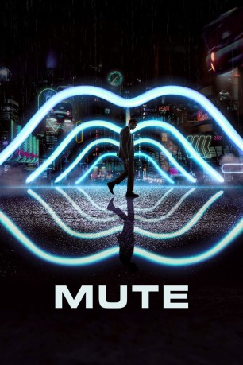
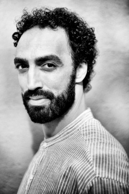

#8327 Mute
 
 IMDB-Wertung: 5.4 / 10
IMDB-Wertung: 5.4 / 10  Tomatometer: 19
Tomatometer: 19  Metascore: 35
Metascore: 35 
Berlin ist im Jahre 2052 ein düsterer Ort, in dem westliche und östliche Kulturen aufeinander treffen. Mittendrin: Der stumme Barkeeper Leo Beiler, den es nur noch wegen seiner großen Liebe an diesem wenig beschaulichen Ort hält. Doch seine Freundin verschwindet eines Tages plötzlich ohne jede Spur. Leo begibt sich auf die Suche nach ihr in die dunkelsten und gefährlichsten Ecken der pulsierenden Großstadt. Im Berliner Untergrund stößt er auch auf die US-Militär-Chirurgen Cactus Bill und Duck Teddington. Können die beiden Fremden Leo helfen, seine große Liebe wiederzufinden oder haben sie ganz eigene Pläne im Sinn? In einer von Kriminalität geprägten Stadt, in der man niemandem trauen kann, sollte Leo die Antwort darauf eigentlich wissen, doch alleine wird es für ihn nahezu unmöglich, sein Ziel zu erreichen.
Jahr: 2018
Dauer: 126 Minuten
FSK:
Land: England Studio: NetflixTonspuren: DD5.1 - ,
Untertitel: Deutsch, Englisch,
Auflösung: 1080p (1920x1080) Größe: 3768 MB
Genre: Thriller, Sci-Fi, Mystery
Regisseur: Duncan Jones
Drehbuch: Michael Robert Johnson
Soundtrack: Clint Mansell
Darsteller:
- Eugen Bauder als Young Man
- Livia Matthes als Young Woman #1
- Jarah Maria Anders als Young Woman #2
- Alexander Skarsgård als Leo
- Seyneb Saleh als Naadirah
 Robert Sheehan als Luba
Robert Sheehan als Luba Paul Rudd als Cactus Bill
Paul Rudd als Cactus Bill- Daniel Fathers als Sgt. Robert Kloskowski
- Nikki Lamborn als Rhonna
 Noel Clarke als Stu
Noel Clarke als Stu- Robert Kazinsky als Rob
- Gilbert Owuor als Maksim
 Justin Theroux als Duck
Justin Theroux als Duck- Andrzej Blumenfeld als Akim
 Rainer Reiners als Newsie
Rainer Reiners als Newsie- Melissa Holroyd als Ms Cunc
- Matti Boustedt als Sales Rep
 Jannis Niewöhner als Nicky Simsek
Jannis Niewöhner als Nicky Simsek- Luisa Wolf als Waitress
- Anja Karmanski als Kathy
 Dominic Monaghan als Oswald
Dominic Monaghan als Oswald- Florence Kasumba als Tanya
- Marno Röder als Bouncer
- Yung Ngo als Flying Meal's Customer
-  Samir Fuchs als Neighbour #2
- Stefko Haushevsky als Security Guard
- Claudina Hoff ter Heide als Girlfriend (uncredited)
 Sam Rockwell als Sam Bell (uncredited)
Sam Rockwell als Sam Bell (uncredited)- Levi Eisenblätter als Young Leo
- Rosie Shaw als Young Sybille
- Caroline Peters als Leo's Mother
- Laura de Boer als Doctor
- Grégoire Gros als Doctor's Assistant
- Ulf Herman als Gunther
- Alexander Parsch als Doorman #1
- Vitali Skrobot als Doorman #2
- Michael Behrens als Akim's Heavy
- Mike Davies als Jim Reet
- Christian Näthe als Greasy Spoon Owner
- Annina Walt als Kanwal
- Mia-Sophie Bastin als Josie
- Lea-Marie Bastin als Josie
- Rodene Ronquillo als Makiko
- Karl-Luis Vossbeck als Skinhead #1
- Jenny-Francis Kussatz als Skinhead #2
- Youssef Habbaoui als Skinhead #3
- Paul Weber als 8year Old Son
- Emily Shaw als 10year Old Daughter
- Ekaterina Chapandze als Mother
- Robert Nickisch als Flying Meal's Employee
Datei: X:\2018(G-M)\Mute (2018, FSK, 1920x1080).mkv seit 24.02.2018
Festplatte: HD 2018(G-Z)-2019(A-Z)
 Es gibt insgesamt 138 Filme in der Gruppe '2018(G-M)'
Es gibt insgesamt 138 Filme in der Gruppe '2018(G-M)'